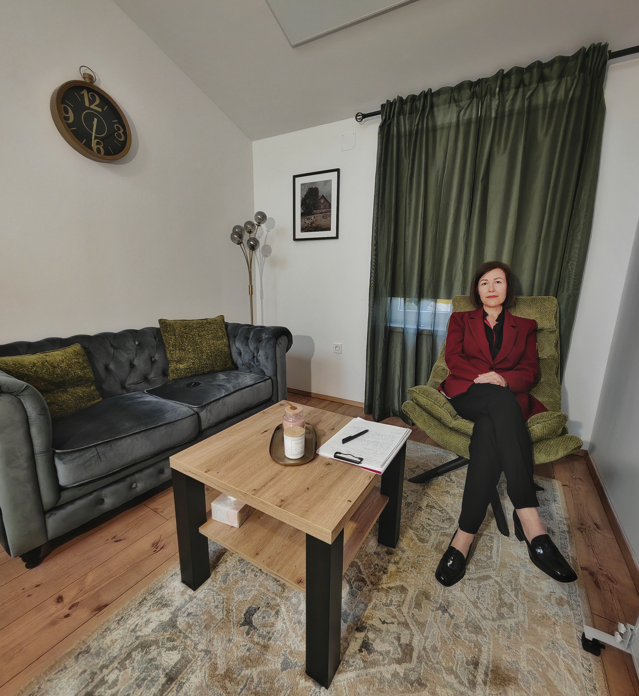
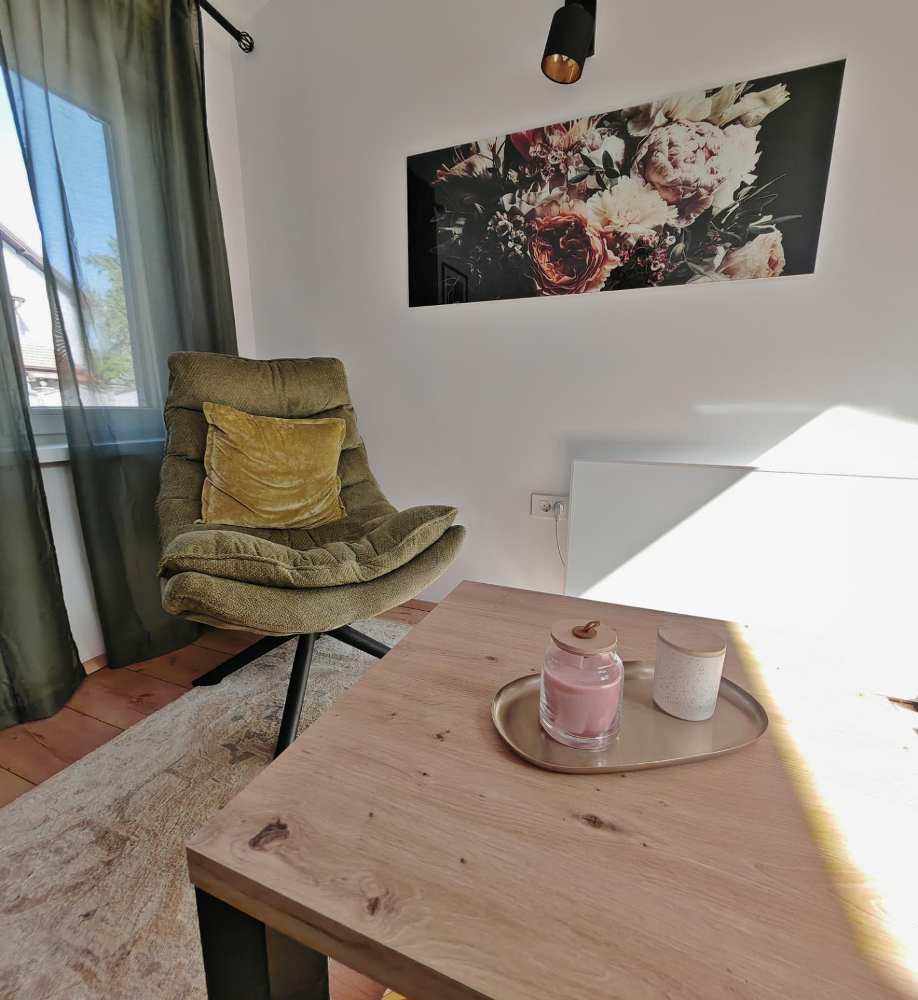
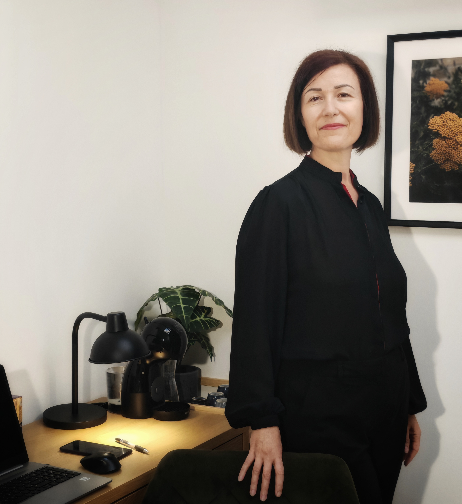

Ana Leder
Balans psihoterapija · Velika GoricaPrivilegija je biti uz nekoga dok pronalazi vlastiti put i snagu za kvalitetniji život.

Tko sam i zašto radim ono što radim?
Ljudi i njihove priče oduvijek su me fascinirali, ono što se događa ispod površine, razlozi naših unutarnjih teškoća i načini na koje možemo živjeti svjesnije i lakše.
Duboko vjerujem da svaka osoba, čak i u najtežim razdobljima, u sebi nosi resurse za rast i promjenu. Savjetovanje i psihoterapiju doživljavam kao pažljivo vođen proces u kojem, uz stručnu podršku i siguran odnos, postaje moguće ponovno pronaći unutarnju ravnotežu.
Za mene je terapija prije svega odnos, odnos u kojem možete biti viđeni, shvaćeni i prihvaćeni, bez osuđivanja i bez pritiska.
Terapija je prostor u kojem možete biti viđeni, shvaćeni i prihvaćeni.
— Ana Leder


Kako radim? - moj pristup psihoterapiji
Moj stil rada je topao i podržavajući, ali istovremeno jasan i profesionalno strukturiran. Ne vjerujem u pristup „jedan za sve". Svaka osoba dolazi sa svojom pričom, iskustvima i vrijednostima - i terapijski proces gradimo zajedno, u skladu s vašim potrebama.
Po osnovnoj edukaciji sam logoterapeut, a u svom radu povezujem humanističku perspektivu, egzistencijalno razumijevanje smisla te kognitivno-bihevioralne alate posebno korisne u stanjima povišene psihičke opterećenosti - anksioznih smetnji, intenzivnog stresa, paničnih epizoda, sindroma sagorijevanja (burnouta), poremećaja spavanja, ruminativnih obrazaca mišljenja i teškoća u emocionalnoj regulaciji.
Na terapeutu je da pristup prilagodi osobi, a ne obrnuto. U terapiji nema forsiranja. Svaka tema ima svoje vrijeme, a svatko ima svoj tempo. Vjerujem da se promjena ne događa pritiskom, već kroz poštivanje klijentovih granica i međusobno povjerenje.
Zašto je odnos temelj terapijskog rada u Balansu?
Jedan od najvažnijih elemenata psihoterapije je odnos između terapeuta i klijenta. Mnogi psihološki problemi nastaju u kontekstu narušenih odnosa. Zato iscjeljenje često započinje upravo kroz iskustvo drugačijeg, sigurnog odnosa.
Terapija je prostor povjerenja i odgovornosti s obje strane.
Etičnost, empatija i stručnost, kontinuirano usavršavanje i profesionalna jasnoća.
Aktivna primjena uvida u svakodnevnom životu jer prava promjena se događa izvan terapijske sobe.
Važno je aktivno sudjelovati u psihoterapeutskom procesu, jer se sazrijevanje ne događa spontano, već aktivnim i odgovornim traženjem.

Što za mene znači „Balans"?
Balans znači ravnotežu, i ne znači savršen život bez problema. Balans je sposobnost vraćanja sebi i svojim resursima. Ne znači da nikad nećete izgubiti ravnotežu, nego da joj se znate vratiti.
Anksioznost se može pojaviti, ali ne mora upravljati vašim ponašanjem. Konflikt se može dogoditi, ali ne mora srušiti vaš osjećaj vrijednosti. Balans znači fleksibilnost: da vas život može poljuljati, ali da ne izgubite sebe, svoje vrijednosti ili životni smisao.

Edukacija i stručnost
-
01
Magistra društveno-humanističkih znanosti Visokoškolska edukacija
-
02
Četverogodišnja edukacija iz logoterapije i egzistencijalne analize HCLEA
-
03
Edukacija iz propedeutike psihoterapije Algebra - Bernays veleučilište
-
04
Edukacija iz transakcijske analize (TA) Dodatno stručno usavršavanje
-
05
Otvorena edukacija iz dječje i adolescentske Gestalt terapije IGW
-
06
Brojni seminari i stručna usavršavanja Kontinuirano višegodišnje usavršavanje
Ana Leder je aktivna članica Hrvatske komore psihoterapeuta - tijela koje osigurava etičke standarde i stručnu razinu psihoterapeutskog rada u Hrvatskoj.
Izvan terapijske sobe
U dugogodišnjem sam braku i majka sam dvojici sinova. Velika ljubiteljica životinja.
U slobodno vrijeme volontiram i čitam, obožavam putovati, a opuštam se uz kavice i druženja s bliskim ljudima.
Vjerujem da autentičan život, onaj koji živimo u skladu sa sobom i svojim vrijednostima počinje malim, svjesnim koracima. I to, na kraju, i jest srž onoga što radim.

Kad ste spremni, tu sam.
Ako osjećate da vam je potrebna podrška ili jednostavno želite saznati više, slobodno se javite. Nema obveze i pritiska. Prvi korak je uvijek samo razgovor.